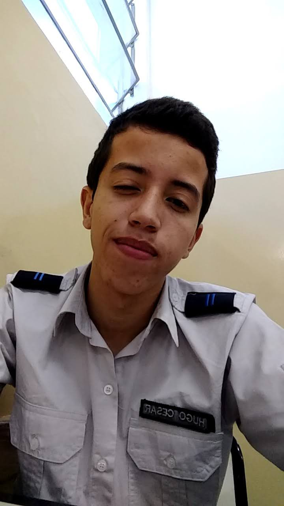

Blog do Hugo
Meu nome é Hugo Cesar Ribeiro Caldeira, nasci em Belo Horizonte no dia 04/03/2002. Estudei o Ensino Fundamental e Médio no Colégio Tiradentes da PMMG - Argentino Madeira, desde 2008 até 2019 e tentei entrar no curso de Ciência da Computação na UFMG, porém não obitive a nota de corte suficiente no ENEM. Comecei em Fevereiro/2020 o pré-vestibular do Chromos para tentar ingressar na UFMG novamente, mas devido a pandemia as aulas onlines se tornaram muito exautivas/inviavéis e decidi sair do cursinho.
Desde pequeno eu vivia jogando videogames com meu pai, amigos e primos, então meu interesse e paixão foram só aumentando por essas tecnologias devido às diversas horas jogando. Paralelamente, eu utilizava bastante o computador para conectar com meus amigos para jogar e acessava diversos sites para passar o tempo, e também fiquei intrigado em saber como todos aquelas aplicações e sites funcionavam.
Em 2014 meu primo começou este curso por outra faculdade e via ele, constantemente, programando e quando ele me explicava o que estava fazendo, eu não entendia nada mas ficava interessado mesmo assim. Já em 2018, depois de alguns testes vocacionais a maioria resultavam nas áreas de tecnologia e Matemática, por influência do meu primo e resultados dos testes eu decidi ir pelo curso de Ciência da Computação, e no segundo semestre de 2020 prestei vestibular pela PUC Minas e fui aprovado.
De começo fiquei preocupado com as matérias de programção, pois não tinha conhecimento nenhum na área e estava tranquilo com a matéria de Cálculo I por causa da minha facilidade com Matemática. Porém hoje em dia já está mais tranquilo porque consegui absorver o conteúdo com facilidade.